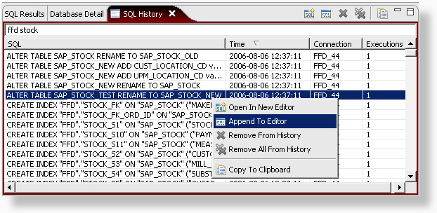

Every statement that was succesfully executed is logged in the SQL History view.

The view shows the statement, the date and time when the statement was last executed, which connection was used and how many times the statement has been executed. The SQL statements can be filtered, sorted, removed and opened in or appended to the SQL Editor.